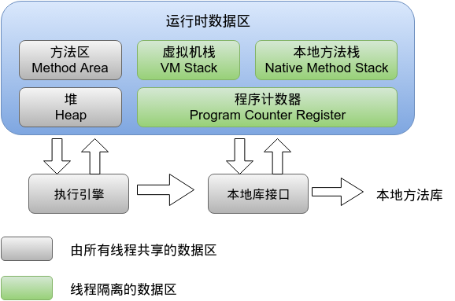

<!DOCTYPE html>
<html lang class="loading">
<head><meta name="generator" content="Hexo 3.8.0">
    <meta charset="UTF-8">
    <meta http-equiv="X-UA-Compatible" content="IE=edge,chrome=1">
    <meta name="viewport" content="width=device-width, minimum-scale=1.0, maximum-scale=1.0, user-scalable=no">
    <title>利用 ThreadLocal 保存参数, 不用传参随取随用 - Linco</title>
    <meta name="apple-mobile-web-app-capable" content="yes">
    <meta name="apple-mobile-web-app-status-bar-style" content="black-translucent">
    <meta name="google" content="notranslate">
    <meta name="keywords" content="Linco, Blog,"> 
    <meta name="description" content="在讨论 ThreadLocal 的使用前, 有必要先了解 jvm 的内存模型

以及多线程的内存模型

jvm 的主内存中的”堆”结构记录了程序的所有对象信息, “本地方法栈”记录着当前线程的运行变,"> 
    <meta name="author" content="Linco"> 
    <link rel="alternative" href="atom.xml" title="Linco" type="application/atom+xml"> 
    <link rel="icon" href="/img/icon.png"> 
    <link rel="stylesheet" href="//cdn.jsdelivr.net/npm/gitalk@1/dist/gitalk.css">
    <link rel="stylesheet" href="/css/diaspora.css">

</head>
</html>
<body class="loading">
    <span id="config-title" style="display:none">Linco</span>
    <div id="loader"></div>
    <div id="single">
    <div id="top" style="display: block;">
    <div class="bar" style="width: 0;"></div>
    <a class="icon-home image-icon" href="javascript:;" data-url></a>
    <div title="播放/暂停" class="icon-play"></div>
    <h3 class="subtitle">利用 ThreadLocal 保存参数, 不用传参随取随用</h3>
    <div class="social">
        <!--<div class="like-icon">-->
            <!--<a href="javascript:;" class="likeThis active"><span class="icon-like"></span><span class="count">76</span></a>-->
        <!--</div>-->
        <div>
            <div class="share">
                <a title="获取二维码" class="icon-scan" href="javascript:;"></a>
            </div>
            <div id="qr"></div>
        </div>
    </div>
    <div class="scrollbar"></div>
</div>

    <div class="section">
        <div class="article">
    <div class="main">
        <h1 class="title">利用 ThreadLocal 保存参数, 不用传参随取随用</h1>
        <div class="stuff">
            <span>十一月 11, 2019</span>
            
  <ul class="post-tags-list"><li class="post-tags-list-item"><a class="post-tags-list-link" href="/tags/Spring/">Spring</a></li><li class="post-tags-list-item"><a class="post-tags-list-link" href="/tags/项目应用/">项目应用</a></li></ul>


        </div>
        <div class="content markdown">
            <p>在讨论 ThreadLocal 的使用前, 有必要先了解 jvm 的内存模型</p>
<p></p>
<p>以及多线程的内存模型</p>
<p></p>
<p>jvm 的主内存中的”堆”结构记录了程序的所有对象信息, “本地方法栈”记录着当前线程的运行变量, 是多线程模型的工作内存, 工作内存对应物理硬件中的cache, 是JVM对于不同硬件架构, 不同操作系统的机器的物理缓存的共同抽象. 线程直接操作工作内存, 通过缓存一致性协议同步到主内存中, 各线程的工作内存之间相互隔离.</p>
<p>并非所有的变量都存储在主内存, “本地方法栈”除了缓存主内存的数据, 也可以存储线程独享的变量, 这部分称为私有变量. 私有变量可能是基础数据类型, 或者是对主内存对象的引用, 但不能是对象本身 – 所有对象都在”堆”中.  由于线程的工作内存数据隔离, 各线程可以存储同名不同值的私有变量, 这就为ThreadLocal的实现创造了物理基础</p>
<p><strong>TreadLocal 类用于读写工作内存, 每个ThreadLocal实例set()时对应产生一个当前线程的私有变量, 可以在线程内的任何时候读写数据, 并且性能高于常规的内存取值</strong></p>
<p>值得注意的是, ThreadLocal对象本身并不是线程隔离的, 也不需要线程隔离, 我们的ThreadLocal对象定义在主内存中, 由所有线程共享, 真正实现隔离的是ThreadLocal对象的<code>get()</code>和<code>set()</code>方法</p>
<p>先获取一个ThreadLocal实例, 里面的泛型<integer> 定义了存储值的类型</integer></p>
<figure class="highlight java"><table><tr><td class="gutter"><pre><span class="line">1</span><br></pre></td><td class="code"><pre><span class="line">ThreadLocal&lt;Integer&gt; threadLocal = <span class="keyword">new</span> ThreadLocal&lt;&gt;();</span><br></pre></td></tr></table></figure>
<p>  如果有需要, 可以在new实例时重写初始化方法</p>
<figure class="highlight java"><table><tr><td class="gutter"><pre><span class="line">1</span><br><span class="line">2</span><br><span class="line">3</span><br><span class="line">4</span><br><span class="line">5</span><br></pre></td><td class="code"><pre><span class="line"><span class="keyword">private</span> ThreadLocal&lt;Integer&gt; num=<span class="keyword">new</span> ThreadLocal&lt;&gt;()&#123;  </span><br><span class="line">    <span class="function"><span class="keyword">public</span> Integer <span class="title">initialValue</span><span class="params">()</span></span>&#123;  </span><br><span class="line">        <span class="keyword">return</span> <span class="number">1</span>;  </span><br><span class="line">    &#125;  </span><br><span class="line">&#125;;</span><br></pre></td></tr></table></figure>
<p>每个ThreadLocal实例只存储一个对象, 同一线程可以获取多个ThreadLocal</p>
<p>存取值按照以下</p>
<figure class="highlight java"><table><tr><td class="gutter"><pre><span class="line">1</span><br><span class="line">2</span><br><span class="line">3</span><br><span class="line">4</span><br><span class="line">5</span><br><span class="line">6</span><br><span class="line">7</span><br><span class="line">8</span><br><span class="line">9</span><br></pre></td><td class="code"><pre><span class="line"><span class="comment">// 初始化对象</span></span><br><span class="line">ThreadLocal&lt;Integer&gt; userIdThreadLocal = <span class="keyword">new</span> ThreadLocal&lt;&gt;();</span><br><span class="line"><span class="comment">// 设值</span></span><br><span class="line">userIdThreadLocal.set(<span class="number">1</span>);</span><br><span class="line"></span><br><span class="line">...</span><br><span class="line"></span><br><span class="line"><span class="comment">// 取值</span></span><br><span class="line"><span class="keyword">int</span> userId = userIdThreadLocal.get();</span><br></pre></td></tr></table></figure>
<p>上面用法和定义一个局部变量并没有区别, 但如果把<code>userIdThreadLocal</code>的引用保存到静态变量中, 情况将大不相同</p>
<figure class="highlight java"><table><tr><td class="gutter"><pre><span class="line">1</span><br><span class="line">2</span><br><span class="line">3</span><br><span class="line">4</span><br><span class="line">5</span><br><span class="line">6</span><br><span class="line">7</span><br><span class="line">8</span><br><span class="line">9</span><br><span class="line">10</span><br></pre></td><td class="code"><pre><span class="line"><span class="keyword">public</span> <span class="class"><span class="keyword">class</span> <span class="title">ThreadHolder</span> </span>&#123;</span><br><span class="line">	<span class="keyword">private</span> <span class="keyword">static</span> ThreadLocal&lt;Integer&gt; threadLocal = <span class="keyword">new</span> ThreadLocal&lt;&gt;();</span><br><span class="line">    <span class="function"><span class="keyword">public</span> <span class="keyword">static</span> <span class="keyword">void</span> <span class="title">set</span><span class="params">(Integer value)</span></span>&#123;</span><br><span class="line">		threadLocal.set(value);</span><br><span class="line">	&#125;</span><br><span class="line"></span><br><span class="line">    <span class="function"><span class="keyword">public</span> <span class="keyword">static</span> Integer <span class="title">get</span><span class="params">()</span></span>&#123;</span><br><span class="line">		<span class="keyword">return</span> threadLocal.get;</span><br><span class="line">	&#125;</span><br><span class="line">&#125;</span><br></pre></td></tr></table></figure>
<p>现在我们已经可以在任何需要的地方Get和Set值了, 只需要简单的</p>
<p><code>ThreadHolder.set(), ThreadHolder.get()</code></p>
<p>仔细比较和下面用法的差别</p>
<figure class="highlight java"><table><tr><td class="gutter"><pre><span class="line">1</span><br><span class="line">2</span><br><span class="line">3</span><br><span class="line">4</span><br><span class="line">5</span><br><span class="line">6</span><br><span class="line">7</span><br><span class="line">8</span><br><span class="line">9</span><br><span class="line">10</span><br></pre></td><td class="code"><pre><span class="line"><span class="keyword">public</span> <span class="class"><span class="keyword">class</span> <span class="title">IntegerHolder</span> </span>&#123;</span><br><span class="line">	<span class="keyword">private</span> <span class="keyword">static</span> Integer integerHolder = <span class="keyword">null</span>;</span><br><span class="line">    <span class="function"><span class="keyword">public</span> <span class="keyword">static</span> <span class="keyword">void</span> <span class="title">set</span><span class="params">(Integer value)</span></span>&#123;</span><br><span class="line">		integerHolder = value;</span><br><span class="line">	&#125;</span><br><span class="line"></span><br><span class="line">    <span class="function"><span class="keyword">public</span> <span class="keyword">static</span> Integer <span class="title">get</span><span class="params">()</span></span>&#123;</span><br><span class="line">		<span class="keyword">return</span> integerHolder;</span><br><span class="line">	&#125;</span><br><span class="line">&#125;</span><br></pre></td></tr></table></figure>
<p>我们用ThreadLocal包装一下Mybatis的分页插件 PageHelper, 体验一下实际项目中的应用</p>
<p>PageHelper 插件可以帮助我们自动完成列表数据的分页查询和显示, 功能强悍使用起来非常简单</p>
<p>在 pom.xml 文件添加依赖</p>
<figure class="highlight xml"><table><tr><td class="gutter"><pre><span class="line">1</span><br><span class="line">2</span><br><span class="line">3</span><br><span class="line">4</span><br><span class="line">5</span><br><span class="line">6</span><br></pre></td><td class="code"><pre><span class="line"><span class="comment">&lt;!-- 分页插件 --&gt;</span></span><br><span class="line"><span class="tag">&lt;<span class="name">dependency</span>&gt;</span></span><br><span class="line">    <span class="tag">&lt;<span class="name">groupId</span>&gt;</span>com.github.pagehelper<span class="tag">&lt;/<span class="name">groupId</span>&gt;</span></span><br><span class="line">    <span class="tag">&lt;<span class="name">artifactId</span>&gt;</span>pagehelper-spring-boot-starter<span class="tag">&lt;/<span class="name">artifactId</span>&gt;</span></span><br><span class="line">    <span class="tag">&lt;<span class="name">version</span>&gt;</span>1.2.5<span class="tag">&lt;/<span class="name">version</span>&gt;</span></span><br><span class="line"><span class="tag">&lt;/<span class="name">dependency</span>&gt;</span></span><br></pre></td></tr></table></figure>
<p>在application文件配置基本信息, 我使用的是yml格式的配置文件, 如果用properties格式自行按参数编写</p>
<p>也可以用<a href="https://www.toyaml.com/index.html" target="_blank" rel="noopener">这里的工具</a>一键转换</p>
<figure class="highlight yaml"><table><tr><td class="gutter"><pre><span class="line">1</span><br><span class="line">2</span><br><span class="line">3</span><br><span class="line">4</span><br><span class="line">5</span><br><span class="line">6</span><br><span class="line">7</span><br></pre></td><td class="code"><pre><span class="line"></span><br><span class="line"><span class="attr">pagehelper:</span></span><br><span class="line"><span class="attr">  helperDialect:</span> <span class="string">mysql</span></span><br><span class="line"><span class="attr">  reasonable:</span> <span class="literal">true</span></span><br><span class="line"><span class="attr">  supportMethodsArguments:</span> <span class="literal">true</span></span><br><span class="line"><span class="attr">  params:</span> <span class="string">count=countSql</span></span><br><span class="line"><span class="attr">  returnPageInfo:</span> <span class="string">check</span></span><br></pre></td></tr></table></figure>
<p>配置完成后, 在需要分页查询的前面使用语句</p>
<figure class="highlight plain"><table><tr><td class="gutter"><pre><span class="line">1</span><br></pre></td><td class="code"><pre><span class="line">PageHelper.startPage(pageNum, pageSize);</span><br></pre></td></tr></table></figure>
<p>记得用 Page 或者Page<class> 泛型对象接收查询结果, 建议使用泛型, 相当于把普通查询的List<class>换成Page<class>, 其他不变. <code>calss</code>使用数据模型的类名</class></class></class></p>
<figure class="highlight plain"><table><tr><td class="gutter"><pre><span class="line">1</span><br></pre></td><td class="code"><pre><span class="line">Page&lt;class&gt; result = (select operation)</span><br></pre></td></tr></table></figure>
<p>即可自动完成分页查询</p>
<p>分页参数 <code>pageNum, pageSize</code> 一般是前端传值</p>
<p></p>
<p>如果是简单查询一步到位, 可以在Controller层调用<code>PageHelper.startPage</code>–(不建议, 逻辑分层不对, 各处逻辑不统一, startPage上提影响性能). </p>
<p>如果是多步查询操作, 需要把 <code>pageNum, pageSize</code>两个参数层层传递, 最终给到分页查询的操作方法, 在发起查询前调用一次<code>PageHelper.startPage()</code></p>
<p>用ThreadLocal就能解决这个问题</p>
<p>先创建容器类, 容器里保存一个Map, 这样可以在一个ThreadLocal储存多个对象</p>
<figure class="highlight java"><table><tr><td class="gutter"><pre><span class="line">1</span><br><span class="line">2</span><br><span class="line">3</span><br><span class="line">4</span><br><span class="line">5</span><br><span class="line">6</span><br><span class="line">7</span><br><span class="line">8</span><br><span class="line">9</span><br><span class="line">10</span><br><span class="line">11</span><br><span class="line">12</span><br><span class="line">13</span><br><span class="line">14</span><br><span class="line">15</span><br><span class="line">16</span><br><span class="line">17</span><br><span class="line">18</span><br><span class="line">19</span><br><span class="line">20</span><br><span class="line">21</span><br><span class="line">22</span><br><span class="line">23</span><br><span class="line">24</span><br><span class="line">25</span><br><span class="line">26</span><br><span class="line">27</span><br><span class="line">28</span><br><span class="line">29</span><br><span class="line">30</span><br><span class="line">31</span><br><span class="line">32</span><br><span class="line">33</span><br><span class="line">34</span><br><span class="line">35</span><br><span class="line">36</span><br><span class="line">37</span><br><span class="line">38</span><br><span class="line">39</span><br><span class="line">40</span><br><span class="line">41</span><br><span class="line">42</span><br><span class="line">43</span><br><span class="line">44</span><br><span class="line">45</span><br><span class="line">46</span><br><span class="line">47</span><br><span class="line">48</span><br></pre></td><td class="code"><pre><span class="line"></span><br><span class="line"><span class="comment">/**</span></span><br><span class="line"><span class="comment"> * <span class="doctag">@author</span> Linco</span></span><br><span class="line"><span class="comment"> * 注意ThreadHolder对象是线程私有的, 并且会在线程结束后清除</span></span><br><span class="line"><span class="comment"> */</span></span><br><span class="line"> </span><br><span class="line"><span class="keyword">public</span> <span class="class"><span class="keyword">class</span> <span class="title">ThreadHolder</span> </span>&#123;</span><br><span class="line">	<span class="keyword">private</span> <span class="keyword">static</span> ThreadLocal&lt;ThreadHolder&gt; threadLocal = <span class="keyword">new</span> ThreadLocal&lt;&gt;();</span><br><span class="line">	<span class="keyword">private</span> Map&lt;String, Object&gt; context = <span class="keyword">new</span> HashMap&lt;&gt;();</span><br><span class="line"></span><br><span class="line">	<span class="keyword">static</span> &#123;</span><br><span class="line">		threadLocal.remove();</span><br><span class="line">	&#125;</span><br><span class="line"></span><br><span class="line"><span class="comment">/*	private ThreadHolder() &#123;</span></span><br><span class="line"><span class="comment">		if (threadLocal.get() == null) &#123;</span></span><br><span class="line"><span class="comment">			threadLocal.set(this);</span></span><br><span class="line"><span class="comment">		&#125;</span></span><br><span class="line"><span class="comment">	&#125;*/</span></span><br><span class="line"></span><br><span class="line">	<span class="keyword">private</span> <span class="keyword">static</span> <span class="keyword">volatile</span> ThreadHolder threadHolder = <span class="keyword">null</span>;</span><br><span class="line"></span><br><span class="line">	<span class="function"><span class="keyword">private</span> <span class="title">ThreadHolder</span><span class="params">()</span> </span>&#123; &#125;</span><br><span class="line"></span><br><span class="line">	<span class="function"><span class="keyword">private</span> <span class="keyword">static</span> ThreadHolder <span class="title">getInstance</span><span class="params">()</span> </span>&#123;</span><br><span class="line">		<span class="keyword">if</span> (threadLocal.get() == <span class="keyword">null</span>)&#123;</span><br><span class="line">			<span class="keyword">synchronized</span>(ThreadHolder.class)&#123;</span><br><span class="line">				<span class="keyword">if</span> (threadLocal.get() == <span class="keyword">null</span>) &#123;</span><br><span class="line">					threadHolder = <span class="keyword">new</span> ThreadHolder();</span><br><span class="line">					threadLocal.set(threadHolder);</span><br><span class="line">				&#125;</span><br><span class="line">			&#125;</span><br><span class="line">		&#125;</span><br><span class="line">		<span class="keyword">return</span> threadHolder;</span><br><span class="line">	&#125;</span><br><span class="line"></span><br><span class="line">	<span class="function"><span class="keyword">public</span> <span class="keyword">static</span> <span class="keyword">void</span> <span class="title">set</span><span class="params">(String key, Object value)</span></span>&#123;</span><br><span class="line">		ThreadHolder holder = getInstance();</span><br><span class="line">		holder.context.put(key, value);</span><br><span class="line">	&#125;</span><br><span class="line"></span><br><span class="line">	<span class="function"><span class="keyword">public</span> <span class="keyword">static</span> Object <span class="title">get</span><span class="params">(String key)</span></span>&#123;</span><br><span class="line">		<span class="keyword">if</span> (threadLocal != <span class="keyword">null</span>) &#123;</span><br><span class="line">			<span class="keyword">return</span> threadLocal.get().context.get(key);</span><br><span class="line">		&#125;</span><br><span class="line">		<span class="keyword">return</span> <span class="keyword">null</span>;</span><br><span class="line">	&#125;</span><br><span class="line">&#125;</span><br></pre></td></tr></table></figure>
<p><em>ThreadLocal 保存的对象并不是线程私有的, 由于 ThreadLocal 只保存对象的引用, 假定现在有线程A创建了 threadHolder 对象, 这个对象实际保存在堆中, 被所有线程共享. 可能很容易产生误解, 认为这个 threadHolder 存在于线程的工作内存中, 其实不是.</em></p>
<p>由于 threadHolder 的引用只由线程A的 ThreadLocal 持有, 其他线程并不知道线程A创建的threadHolder, 他们也可能创建属于他们自己的 threadHolder , 不同线程创建的 ThreadHolder对象不会相互影响. </p>
<p><em>倘若把上面的类修改一下, 把 ThreadHolder 对象的引用暴露出来, 那么其他线程也可以访问和修改A线程的 ThreadHolder 对象, 隔离性将不复存在</em></p>
<p>创建一个辅助读写分页参数的工具类</p>
<figure class="highlight java"><table><tr><td class="gutter"><pre><span class="line">1</span><br><span class="line">2</span><br><span class="line">3</span><br><span class="line">4</span><br><span class="line">5</span><br><span class="line">6</span><br><span class="line">7</span><br><span class="line">8</span><br><span class="line">9</span><br><span class="line">10</span><br><span class="line">11</span><br><span class="line">12</span><br><span class="line">13</span><br><span class="line">14</span><br><span class="line">15</span><br><span class="line">16</span><br></pre></td><td class="code"><pre><span class="line"><span class="keyword">public</span> <span class="class"><span class="keyword">class</span> <span class="title">PageParams</span> </span>&#123;</span><br><span class="line"></span><br><span class="line">	<span class="function"><span class="keyword">public</span> <span class="keyword">static</span> <span class="keyword">void</span> <span class="title">setPageParams</span><span class="params">(<span class="keyword">int</span> pageNum, <span class="keyword">int</span> pageSize)</span></span>&#123;</span><br><span class="line"><span class="comment">//      将参数传给这个方法就可以实现物理分页了，非常简单。</span></span><br><span class="line"><span class="comment">//		PageHelper.startPage(pageNum, pageSize);</span></span><br><span class="line">		ThreadHolder.set(PageConst.PAGE_NUM_ITEM_NAME, pageNum);</span><br><span class="line">		ThreadHolder.set(PageConst.PAGE_SIZE_ITEM_NAME, pageSize);</span><br><span class="line">	&#125;</span><br><span class="line"></span><br><span class="line">	<span class="function"><span class="keyword">public</span> <span class="keyword">static</span> <span class="keyword">int</span> <span class="title">getPageSize</span><span class="params">()</span></span>&#123;</span><br><span class="line">		<span class="keyword">return</span> (<span class="keyword">int</span>) ThreadHolder.get(PageConst.PAGE_SIZE_ITEM_NAME);</span><br><span class="line">	&#125;</span><br><span class="line">	<span class="function"><span class="keyword">public</span> <span class="keyword">static</span> <span class="keyword">int</span> <span class="title">getPageNum</span><span class="params">()</span></span>&#123;</span><br><span class="line">		<span class="keyword">return</span> (<span class="keyword">int</span>) ThreadHolder.get(PageConst.PAGE_NUM_ITEM_NAME);</span><br><span class="line">	&#125;</span><br><span class="line">&#125;</span><br></pre></td></tr></table></figure>
<p>需要分页时, 在Controller层写入分页参数</p>
<figure class="highlight java"><table><tr><td class="gutter"><pre><span class="line">1</span><br></pre></td><td class="code"><pre><span class="line">PageParams.setPageParams(pageNum, pageSize)</span><br></pre></td></tr></table></figure>
<p>中间不用传参, 也可以进行复杂的SQL操作</p>
<p>最后在分页查询前取得分页参数</p>
<figure class="highlight java"><table><tr><td class="gutter"><pre><span class="line">1</span><br></pre></td><td class="code"><pre><span class="line">PageHelper.startPage(PageParams.getPageNum(), PageParams.getPageSize());</span><br></pre></td></tr></table></figure>
<p>这样就做到了分页参数的随取随用, 不再需要方法传参了</p>
<p>优化一下, 写分页参数的过程是公共的, 可以提取出来, 通过Interceptor实现</p>
<figure class="highlight java"><table><tr><td class="gutter"><pre><span class="line">1</span><br><span class="line">2</span><br><span class="line">3</span><br><span class="line">4</span><br><span class="line">5</span><br><span class="line">6</span><br><span class="line">7</span><br><span class="line">8</span><br><span class="line">9</span><br><span class="line">10</span><br><span class="line">11</span><br><span class="line">12</span><br><span class="line">13</span><br><span class="line">14</span><br><span class="line">15</span><br><span class="line">16</span><br><span class="line">17</span><br><span class="line">18</span><br><span class="line">19</span><br><span class="line">20</span><br><span class="line">21</span><br><span class="line">22</span><br><span class="line">23</span><br><span class="line">24</span><br><span class="line">25</span><br><span class="line">26</span><br><span class="line">27</span><br><span class="line">28</span><br><span class="line">29</span><br><span class="line">30</span><br><span class="line">31</span><br><span class="line">32</span><br><span class="line">33</span><br></pre></td><td class="code"><pre><span class="line"></span><br><span class="line"><span class="meta">@Component</span></span><br><span class="line"><span class="keyword">public</span> <span class="class"><span class="keyword">class</span> <span class="title">PageHelperInterceptor</span> <span class="keyword">extends</span> <span class="title">HandlerInterceptorAdapter</span> </span>&#123;</span><br><span class="line"></span><br><span class="line">	Logger logger = LoggerFactory.getLogger(PageHelperInterceptor.class);</span><br><span class="line">	<span class="meta">@Value</span>(<span class="string">"$&#123;Spring.pageHelper.DefaultPageNum:512&#125;"</span>)</span><br><span class="line">	<span class="keyword">private</span> <span class="keyword">int</span> pageSizeLimit;</span><br><span class="line"></span><br><span class="line">	<span class="meta">@Override</span></span><br><span class="line">	<span class="function"><span class="keyword">public</span> <span class="keyword">boolean</span> <span class="title">preHandle</span><span class="params">(HttpServletRequest request, HttpServletResponse response, Object handler)</span> <span class="keyword">throws</span> Exception </span>&#123;</span><br><span class="line">		HandlerMethod handlerMethod = <span class="keyword">null</span>;</span><br><span class="line">		<span class="keyword">if</span> (handler <span class="keyword">instanceof</span> HandlerMethod) &#123;</span><br><span class="line">			handlerMethod = (HandlerMethod) handler;</span><br><span class="line">		&#125;</span><br><span class="line"><span class="comment">//		自动触发条件: url以list结尾, 返回类型为PageResult或其继承类</span></span><br><span class="line">		<span class="keyword">if</span> (handlerMethod != <span class="keyword">null</span> &amp;&amp; PageResult.class.isAssignableFrom(handlerMethod.getMethod().getReturnType())) &#123;</span><br><span class="line">			<span class="keyword">try</span> &#123;</span><br><span class="line">				<span class="keyword">int</span> pageNum = Integer.parseInt(request.getParameter(PageConst.PAGE_NUM_ITEM_NAME));</span><br><span class="line">				<span class="keyword">int</span> pageSize = Integer.parseInt(request.getParameter(PageConst.PAGE_SIZE_ITEM_NAME));</span><br><span class="line">				<span class="keyword">if</span> (pageSize &gt; pageSizeLimit) &#123;</span><br><span class="line">					pageSize = pageSizeLimit;</span><br><span class="line">				&#125;</span><br><span class="line">				PageParams.setPageParams(pageNum, pageSize);</span><br><span class="line">			&#125; <span class="keyword">catch</span> (Exception e) &#123;</span><br><span class="line">				logger.error(<span class="string">"Error in creating page data"</span>, e);</span><br><span class="line">				response.setStatus(<span class="number">403</span>);</span><br><span class="line">				response.getWriter().write(<span class="string">"(这里写错误时的响应内容)"</span>);</span><br><span class="line">				<span class="keyword">return</span> <span class="keyword">false</span>;</span><br><span class="line">			&#125;</span><br><span class="line">		&#125;</span><br><span class="line">		<span class="keyword">return</span> <span class="keyword">true</span>;</span><br><span class="line">	&#125;</span><br><span class="line">&#125;</span><br></pre></td></tr></table></figure>
<p>在Spring web注册分页的 Interceptor, 只对<code>/list</code>结尾的请求生效</p>
<figure class="highlight java"><table><tr><td class="gutter"><pre><span class="line">1</span><br><span class="line">2</span><br><span class="line">3</span><br><span class="line">4</span><br><span class="line">5</span><br><span class="line">6</span><br><span class="line">7</span><br><span class="line">8</span><br><span class="line">9</span><br><span class="line">10</span><br><span class="line">11</span><br><span class="line">12</span><br><span class="line">13</span><br><span class="line">14</span><br><span class="line">15</span><br><span class="line">16</span><br><span class="line">17</span><br><span class="line">18</span><br></pre></td><td class="code"><pre><span class="line"><span class="meta">@Configuration</span></span><br><span class="line"><span class="keyword">public</span> <span class="class"><span class="keyword">class</span> <span class="title">RegisterInterceptor</span> <span class="keyword">extends</span> <span class="title">WebMvcConfigurationSupport</span> </span>&#123;</span><br><span class="line"></span><br><span class="line">   <span class="meta">@Autowired</span></span><br><span class="line">   AuthenticationHandlerInterceptor authenticationHandlerInterceptor;</span><br><span class="line"></span><br><span class="line">   <span class="meta">@Autowired</span></span><br><span class="line">   PageHelperInterceptor pageHelperInterceptor;</span><br><span class="line"></span><br><span class="line">   <span class="meta">@Value</span>(<span class="string">"$&#123;Spring.pageHelper.PageUrlSuffix:/**/list&#125;"</span>)</span><br><span class="line">   <span class="keyword">private</span> String pageUrlSuffix;</span><br><span class="line">   <span class="comment">// 注意没有配置响应的url是不会经过interceptor的</span></span><br><span class="line"></span><br><span class="line">   <span class="meta">@Override</span></span><br><span class="line">   <span class="function"><span class="keyword">public</span> <span class="keyword">void</span> <span class="title">addInterceptors</span><span class="params">(InterceptorRegistry registry)</span> </span>&#123;</span><br><span class="line">  registry.addInterceptor(pageHelperInterceptor).addPathPatterns(pageUrlSuffix).pathMatcher(<span class="keyword">new</span> AntPathMatcher());</span><br><span class="line">   &#125;</span><br><span class="line">&#125;</span><br></pre></td></tr></table></figure>
<p>最后的分页结果也按项目统一的返回格式包装</p>
<figure class="highlight java"><table><tr><td class="gutter"><pre><span class="line">1</span><br><span class="line">2</span><br><span class="line">3</span><br><span class="line">4</span><br><span class="line">5</span><br><span class="line">6</span><br><span class="line">7</span><br><span class="line">8</span><br><span class="line">9</span><br><span class="line">10</span><br><span class="line">11</span><br><span class="line">12</span><br><span class="line">13</span><br><span class="line">14</span><br><span class="line">15</span><br><span class="line">16</span><br><span class="line">17</span><br><span class="line">18</span><br><span class="line">19</span><br><span class="line">20</span><br><span class="line">21</span><br><span class="line">22</span><br><span class="line">23</span><br><span class="line">24</span><br></pre></td><td class="code"><pre><span class="line"><span class="meta">@Getter</span></span><br><span class="line"><span class="meta">@Setter</span></span><br><span class="line"><span class="keyword">public</span> <span class="class"><span class="keyword">class</span> <span class="title">PageResult</span>&lt;<span class="title">T</span>&gt; </span>&#123;</span><br><span class="line"></span><br><span class="line">	<span class="keyword">private</span> <span class="keyword">int</span> pageNum;</span><br><span class="line">	<span class="keyword">private</span> <span class="keyword">int</span> pageSize;</span><br><span class="line">	<span class="keyword">private</span> <span class="keyword">int</span> totalPage;</span><br><span class="line">	<span class="keyword">private</span> <span class="keyword">long</span> total;</span><br><span class="line">	<span class="keyword">private</span> <span class="keyword">int</span> code = <span class="number">200</span>;</span><br><span class="line"></span><br><span class="line">	<span class="keyword">private</span> List&lt;T&gt; data;</span><br><span class="line"></span><br><span class="line">	<span class="function"><span class="keyword">public</span> <span class="title">PageResult</span> <span class="params">(Page&lt;T&gt; page)</span> </span>&#123;</span><br><span class="line">		<span class="keyword">this</span>.pageSize = page.getPageSize();</span><br><span class="line">		<span class="keyword">this</span>.totalPage = page.getPages();</span><br><span class="line">		<span class="keyword">this</span>.total = page.getTotal();</span><br><span class="line">		<span class="keyword">this</span>.pageNum = page.getPageNum();</span><br><span class="line">		<span class="keyword">this</span>.data = page.getResult();</span><br><span class="line">	&#125;</span><br><span class="line"></span><br><span class="line">	<span class="keyword">public</span> <span class="keyword">static</span> &lt;T&gt; <span class="function">PageResult&lt;T&gt; <span class="title">of</span> <span class="params">(Page&lt;T&gt; page)</span></span>&#123;</span><br><span class="line">		<span class="keyword">return</span> <span class="keyword">new</span> PageResult&lt;T&gt;(page);</span><br><span class="line">	&#125;</span><br><span class="line">&#125;</span><br></pre></td></tr></table></figure>
<p>Controller层写法类似下面</p>
<figure class="highlight java"><table><tr><td class="gutter"><pre><span class="line">1</span><br><span class="line">2</span><br><span class="line">3</span><br><span class="line">4</span><br></pre></td><td class="code"><pre><span class="line"><span class="meta">@RequestMapping</span>(<span class="string">"list"</span>)</span><br><span class="line"><span class="function"><span class="keyword">public</span> PageResult <span class="title">showChannels</span><span class="params">(SysUser sysUser)</span></span>&#123;</span><br><span class="line">	<span class="keyword">return</span> PageResult.of(channelService.listByCondition(sysUser));</span><br><span class="line">&#125;</span><br></pre></td></tr></table></figure>
<p>业务代码就省略了, 一样的用法</p>
<p>最后测试一下</p>
<p></p>
<figure class="highlight json"><table><tr><td class="gutter"><pre><span class="line">1</span><br><span class="line">2</span><br><span class="line">3</span><br><span class="line">4</span><br><span class="line">5</span><br><span class="line">6</span><br><span class="line">7</span><br><span class="line">8</span><br><span class="line">9</span><br><span class="line">10</span><br><span class="line">11</span><br><span class="line">12</span><br><span class="line">13</span><br><span class="line">14</span><br><span class="line">15</span><br><span class="line">16</span><br><span class="line">17</span><br><span class="line">18</span><br><span class="line">19</span><br><span class="line">20</span><br><span class="line">21</span><br><span class="line">22</span><br><span class="line">23</span><br><span class="line">24</span><br><span class="line">25</span><br><span class="line">26</span><br><span class="line">27</span><br><span class="line">28</span><br><span class="line">29</span><br><span class="line">30</span><br><span class="line">31</span><br><span class="line">32</span><br><span class="line">33</span><br><span class="line">34</span><br><span class="line">35</span><br><span class="line">36</span><br><span class="line">37</span><br><span class="line">38</span><br><span class="line">39</span><br><span class="line">40</span><br><span class="line">41</span><br><span class="line">42</span><br><span class="line">43</span><br></pre></td><td class="code"><pre><span class="line">&#123;</span><br><span class="line">    <span class="attr">"pageNum"</span>: <span class="number">1</span>,</span><br><span class="line">    <span class="attr">"pageSize"</span>: <span class="number">10</span>,</span><br><span class="line">    <span class="attr">"totalPage"</span>: <span class="number">1</span>,</span><br><span class="line">    <span class="attr">"total"</span>: <span class="number">2</span>,</span><br><span class="line">    <span class="attr">"code"</span>: <span class="number">200</span>,</span><br><span class="line">    <span class="attr">"data"</span>: [</span><br><span class="line">        &#123;</span><br><span class="line">            <span class="attr">"id"</span>: <span class="number">1</span>,</span><br><span class="line">            <span class="attr">"username"</span>: <span class="string">"admin"</span>,</span><br><span class="line">            <span class="attr">"nickName"</span>: <span class="string">"admin"</span>,</span><br><span class="line">            <span class="attr">"password"</span>: <span class="literal">null</span>,</span><br><span class="line">            <span class="attr">"channelId"</span>: <span class="number">1</span>,</span><br><span class="line">            <span class="attr">"channelLevel"</span>: <span class="number">-1</span>,</span><br><span class="line">            <span class="attr">"phone"</span>: <span class="literal">null</span>,</span><br><span class="line">            <span class="attr">"email"</span>: <span class="literal">null</span>,</span><br><span class="line">            <span class="attr">"payee"</span>: <span class="literal">null</span>,</span><br><span class="line">            <span class="attr">"beneficiaryType"</span>: <span class="literal">null</span>,</span><br><span class="line">            <span class="attr">"beneficiaryAccount"</span>: <span class="literal">null</span>,</span><br><span class="line">            <span class="attr">"beneficiaryMore"</span>: <span class="literal">null</span>,</span><br><span class="line">            <span class="attr">"remark"</span>: <span class="literal">null</span>,</span><br><span class="line">            <span class="attr">"createTime"</span>: <span class="string">"2019-10-21 14:29:27"</span>,</span><br><span class="line">            <span class="attr">"updateTime"</span>: <span class="literal">null</span></span><br><span class="line">        &#125;,</span><br><span class="line">        &#123;</span><br><span class="line">            <span class="attr">"id"</span>: <span class="number">2</span>,</span><br><span class="line">            <span class="attr">"username"</span>: <span class="string">"Linco"</span>,</span><br><span class="line">            <span class="attr">"nickName"</span>: <span class="string">"Linco"</span>,</span><br><span class="line">            <span class="attr">"password"</span>: <span class="literal">null</span>,</span><br><span class="line">            <span class="attr">"channelId"</span>: <span class="literal">null</span>,</span><br><span class="line">            <span class="attr">"channelLevel"</span>: <span class="literal">null</span>,</span><br><span class="line">            <span class="attr">"phone"</span>: <span class="literal">null</span>,</span><br><span class="line">            <span class="attr">"email"</span>: <span class="literal">null</span>,</span><br><span class="line">            <span class="attr">"payee"</span>: <span class="literal">null</span>,</span><br><span class="line">            <span class="attr">"beneficiaryType"</span>: <span class="literal">null</span>,</span><br><span class="line">            <span class="attr">"beneficiaryAccount"</span>: <span class="literal">null</span>,</span><br><span class="line">            <span class="attr">"beneficiaryMore"</span>: <span class="literal">null</span>,</span><br><span class="line">            <span class="attr">"remark"</span>: <span class="literal">null</span>,</span><br><span class="line">            <span class="attr">"createTime"</span>: <span class="string">"2019-11-12 14:26:22"</span>,</span><br><span class="line">            <span class="attr">"updateTime"</span>: <span class="literal">null</span></span><br><span class="line">        &#125;</span><br><span class="line">    ]</span><br><span class="line">&#125;</span><br></pre></td></tr></table></figure>

            <!--[if lt IE 9]><script>document.createElement('audio');</script><![endif]-->
            <audio id="audio" loop="1" preload="auto" controls="controls" data-autoplay="true">
                <source type="audio/mpeg" src="/music/default_bgm.mp3">
            </audio>
            
        </div>
        
    <div id="gitalk-container" class="comment link" data-ae="false" data-ci="978518cc439cd352dd0b" data-cs="2d89825e7db6df72d065714d6b4ac1ce1829b14e" data-r="LincoXiaoQ.github.io" data-o="LincoXiaoQ" data-a="LincoXiaoQ" data-d="false">查看评论</div>


    </div>
    
</div>


    </div>
</div>
</body>
<script src="//cdn.jsdelivr.net/npm/gitalk@1/dist/gitalk.min.js"></script>
<script src="//lib.baomitu.com/jquery/1.8.3/jquery.min.js"></script>
<script src="/js/plugin.js"></script>
<script src="/js/diaspora.js"></script>
<link rel="stylesheet" href="/photoswipe/photoswipe.css">
<link rel="stylesheet" href="/photoswipe/default-skin/default-skin.css">
<script src="/photoswipe/photoswipe.min.js"></script>
<script src="/photoswipe/photoswipe-ui-default.min.js"></script>

<!-- Root element of PhotoSwipe. Must have class pswp. -->
<div class="pswp" tabindex="-1" role="dialog" aria-hidden="true">
    <!-- Background of PhotoSwipe. 
         It's a separate element as animating opacity is faster than rgba(). -->
    <div class="pswp__bg"></div>
    <!-- Slides wrapper with overflow:hidden. -->
    <div class="pswp__scroll-wrap">
        <!-- Container that holds slides. 
            PhotoSwipe keeps only 3 of them in the DOM to save memory.
            Don't modify these 3 pswp__item elements, data is added later on. -->
        <div class="pswp__container">
            <div class="pswp__item"></div>
            <div class="pswp__item"></div>
            <div class="pswp__item"></div>
        </div>
        <!-- Default (PhotoSwipeUI_Default) interface on top of sliding area. Can be changed. -->
        <div class="pswp__ui pswp__ui--hidden">
            <div class="pswp__top-bar">
                <!--  Controls are self-explanatory. Order can be changed. -->
                <div class="pswp__counter"></div>
                <button class="pswp__button pswp__button--close" title="Close (Esc)"></button>
                <button class="pswp__button pswp__button--share" title="Share"></button>
                <button class="pswp__button pswp__button--fs" title="Toggle fullscreen"></button>
                <button class="pswp__button pswp__button--zoom" title="Zoom in/out"></button>
                <!-- Preloader demo http://codepen.io/dimsemenov/pen/yyBWoR -->
                <!-- element will get class pswp__preloader--active when preloader is running -->
                <div class="pswp__preloader">
                    <div class="pswp__preloader__icn">
                      <div class="pswp__preloader__cut">
                        <div class="pswp__preloader__donut"></div>
                      </div>
                    </div>
                </div>
            </div>
            <div class="pswp__share-modal pswp__share-modal--hidden pswp__single-tap">
                <div class="pswp__share-tooltip"></div> 
            </div>
            <button class="pswp__button pswp__button--arrow--left" title="Previous (arrow left)">
            </button>
            <button class="pswp__button pswp__button--arrow--right" title="Next (arrow right)">
            </button>
            <div class="pswp__caption">
                <div class="pswp__caption__center"></div>
            </div>
        </div>
    </div>
</div>


</html>
